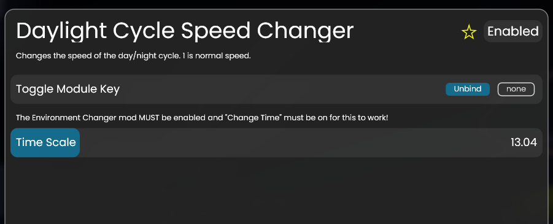

Changes the speed of the day/night cycle on the client-side, meaning only the user can see it.
It does this by continuously changing the value of a setting in a default client mod, Environment Changer, which lets the user set their client-side time. Environment Changer needs to be enabled for it to work.
